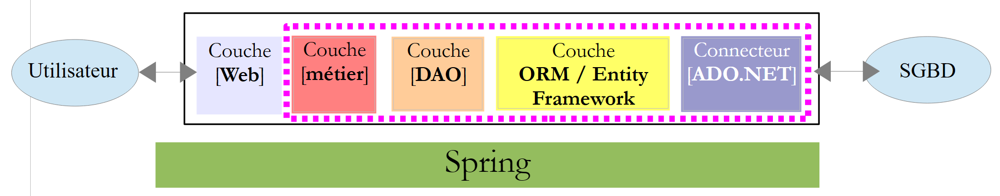
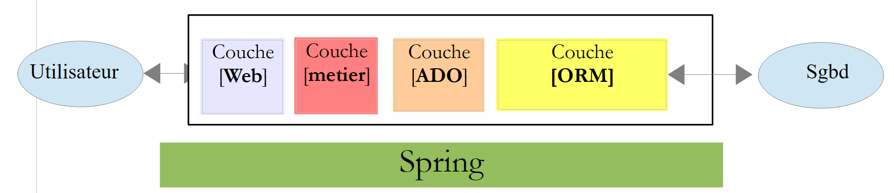

1. Introducción
El PDF de este documento está disponible |AQUÍ|.
Los ejemplos de este documento están disponibles en |AQUÍ|.
Aquí pretendemos introducir, a través de ejemplos, los conceptos clave de ASP.NET MVC, un framework web .NET que proporciona un marco para el desarrollo de aplicaciones web según el patrón MVC (Modelo-Vista-Controlador).
La comprensión de los ejemplos de este documento requiere pocos requisitos previos. Sólo son necesarios conocimientos básicos del lenguaje C#. Esto se puede encontrar en el documento Introducción al lenguaje C en el URL [http://tahe.developpez.com/dotnet/csharp]. Un caso este estudio permite poner en práctica los conocimientos adquiridos sobre ASP.NET MVC. Utiliza el ORM (Object-Relational Mapper) de Entity Framework. Este ORM se presenta en el documento Introducción a Entity Framework 5 Code First, disponible en [http://tahe.developpez.com/dotnet/ef5cf].
Los distintos ejemplos de este documento están disponibles en el URL [http://tahe.developpez.com/dotnet/aspnetmvc] como descarga ZIP archivo.
Este documento está incompleto en muchos aspectos. Para obtener más información sobre ASP.NET MVC, puede utilizar las siguientes referencias:
- [ref1]: el libro "Pro ASP.NET MVC 4"escrito por Adam Freeman y publicado por Apress. Es un libro excelente. Si estuviera disponible en línea de forma gratuita y en francés, este documento sería innecesario. Recomiendo a quien pueda hacerlo que aprenda ASP.NET MVC utilizando este libro. El código fuente de los ejemplos del libro está disponible gratuitamente en [http://www.apress.com/9781430242369];
- [ref2]: el sitio web del marco [http://www.asp.net/mvc]. Allí encontrará todo el material necesario para el autoaprendizaje. Una versión francesa está disponible en el URL [http://dotnet.developpez.com/mvc/];
- el sitio web [developpez.com] dedicado a ASP.NET [http://dotnet.developpez.com/aspnet/ ].
Este documento se ha redactado para que pueda leerse sin tener un ordenador a mano. Por ello, se incluyen muchas capturas de pantalla.
1.1. El papel de ASP.NET MVC en una aplicación Web
En primer lugar, situemos ASP.NET MVC dentro del desarrollo de una aplicación web. Lo más habitual es que se construya sobre una arquitectura multicapa como la siguiente:
 |
- el [Webla capa [...] es la capa en contacto con el usuario de la aplicación web. El usuario interactúa con la aplicación web a través de páginas web mostradas por un navegador. Es en esta capa donde ASP.NET MVC reside, y sólo en esta capa;
- el [empresala capa [DAO] implementa la lógica de negocio de la aplicación, como el cálculo de un salario o una factura. Esta capa utiliza datos del usuario a través de la capa [Web] y del DBMS a través de la capa [DAO];
- El [DAO(Objetos de acceso a datos), la capa [ORM] (Object Relational Mapper), y el conector ADO.NET gestiona el acceso a los datos en la capa DBMS. La capa [ORMactúa como puente entre los objetos manejados por la capa [DAO] y las filas y columnas de las tablas de una base de datos relacional. Dos ORMs se utilizan habitualmente en el mundo .NET: NHibernate (http://sourceforge.net/projects/nhibernate/) y Marco de entidades (http://msdn.microsoft.com/en-us/data/ef.aspx);
- la integración de estas capas puede lograrse utilizando un contenedor de inyección de dependencias como Spring (http://www.springframework.net/);
La mayoría de los ejemplos que se ofrecen a continuación utilizarán una sola capa, la capa [Web]:
 |
Sin embargo, este documento concluirá con la construcción de una aplicación web multicapa:
 |
1.2. El modelo de desarrollo ASP.NET
ASP.NET MVC implementa el patrón arquitectónico MVC (Modelo-Vista-Controlador) de la siguiente manera:
 |
La tramitación de una solicitud de cliente procede del siguiente modo:
- solicitar - los URLs solicitados tienen la forma http://machine:port/contexte/Controlleur/Action/param1/param2/....?p1=v1&p2=v2&... El [Controlador frontal] utiliza un archivo de configuración para "dirigir" la solicitud al controlador correcto y a la acción correcta dentro de ese controlador. Para ello, utiliza el archivo de configuración [Controlador/Acción] del URL. El resto del URL [/param1/param2/...consta de parámetros opcionales que se pasarán a la acción. La dirección "C" en MVC aquí se refiere a la cadena [Controlador frontal, Controlador, Acción]. Si la cadena [Controlador/Acciónno conduce a un controlador o acción existente, el servidor web responderá que no se ha encontrado el URL solicitado.
- procesamiento
- La acción seleccionada puede utilizar los parámetros que el [Front Controller] le ha pasado. Estos pueden provenir de varias fuentes:
- el [/param1/param2/...] del URL,
- el [p1=v1&p2=v2] parámetros del URL,
- parámetros enviados por el navegador con su solicitud;
- al procesar la solicitud del usuario, la acción puede necesitar la capa [de negocio] [2b]. Una vez procesada la petición del cliente, puede desencadenar varias respuestas. Un ejemplo clásico es:
- una página de error si la solicitud no ha podido procesarse correctamente
- una página de confirmación en caso contrario
- la acción ordena que se muestre una vista específica [3]. Esta vista mostrará los datos conocidos como ver modelo. Este es el M en MVC. La acción creará este modelo M [2c] e instruirá a un V que se mostrará [3];
- respuesta-la vista seleccionada V utiliza el modelo M construido por la acción para inicializar las partes dinámicas de la respuesta HTML que debe enviar al cliente, y luego envía esta respuesta.
Aclaremos ahora la relación entre la arquitectura web MVC y la arquitectura por capas. Dependiendo de cómo definamos la modelo, estos dos conceptos pueden o no estar relacionados. Consideremos una aplicación web ASP.NET MVC de una sola capa:
 |
If we implement the [Web] layer with ASP.NET MVC, we will indeed have an MVC web architecture but not a multi-layer architecture. Here, the [Web] layer will handle everything: presentation, business logic, and data access. It is the actions that will perform this work.
Consideremos ahora una arquitectura web multicapa:
 |
La capa [Web] puede implementarse sin un framework y sin seguir el modelo MVC. Tenemos entonces una arquitectura multicapa, pero la capa Web no implementa el modelo MVC.
Así, la capa [Web] anterior puede implementarse con ASP.NET MVC, dando lugar a una arquitectura por capas con una capa [Web] de estilo MVC. Una vez hecho esto, podemos sustituir esta capa ASP.NET MVC por una capa clásica ASP.NET (WebForms) manteniendo el resto (lógica de negocio, DAO, ORM) sin cambios. Entonces tenemos una arquitectura en capas con una capa [Web] que ya no está basada en MVC.
En MVC, dijimos que el modelo M era el de la vista V, i.e, el conjunto de datos mostrados por la vista V. Se da otra definición del modelo M en MVC:
 |
Muchos autores consideran que lo que hay a la derecha de la capa [Web] constituye el modelo M de MVC. Para evitar ambigüedades, podemos referirnos a:
- el modelo de dominio cuando se refiere a todo lo que está a la derecha de la capa [Web]
- el ver modelo cuando se refiere a los datos mostrados por una vista V
En lo sucesivo, el término "modelo M" se referirá exclusivamente al modelo de V ver.
1.3. Herramientas utilizadas
De cara al futuro, estamos utilizando (a partir de septiembre de 2013) las versiones Express de Visual Studio 2012:
- [http://www.microsoft.com/visualstudio/fra/products/visual-studio-express-for-windows-desktop ] para aplicaciones de escritorio;
- [http://www.microsoft.com/visualstudio/fra/products/visual-studio-express-for-Web ] para aplicaciones web.
Para instalar las últimas versiones de estos productos, puede utilizar el [Instalador de la plataforma web] de Microsoft (http://www.microsoft.com/Web/downloads/platform.aspx).
Además, utiliza la herramienta de Google Cromo navegador (http://www.google.fr/intl/fr/chrome/browser/). Instale el [ Extensión [Advanced Rest Client] ( ). He aquí cómo hacerlo:
- Vaya a [Google Web Store] (https://chrome.google.com/webstore) utilizando el navegador Chrome;
- busca la aplicación [Advanced Rest Client]:

- la aplicación estará disponible para su descarga:

- para conseguirlo, tendrás que crear una cuenta de Google. A continuación, la [Google Web Store] te pedirá confirmación [1]:
 |
- En [2], la extensión añadida está disponible en la opción [Aplicaciones] [3]. Esta opción aparece en cada nueva pestaña que crees (CTRL-T) en el navegador.
1.4. Ejemplos
La mayoría de los ejemplos de aprendizaje se limitarán únicamente a la capa web:
 |
Una vez finalizado este tutorial, presentaremos una aplicación web multicapa:
 |